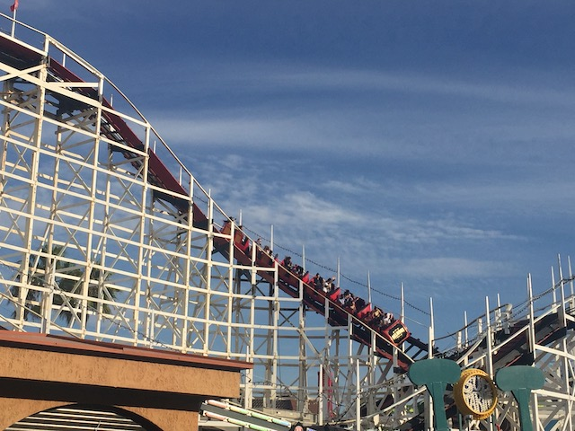
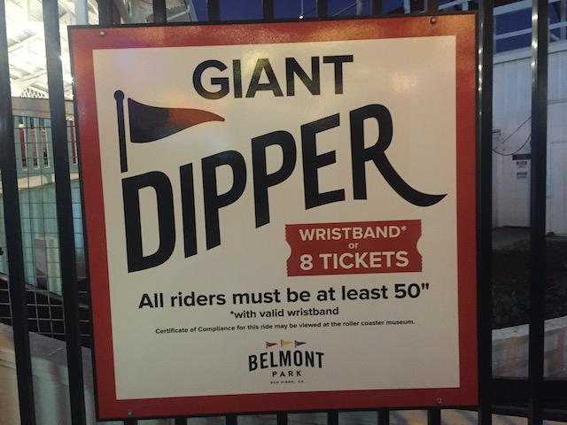
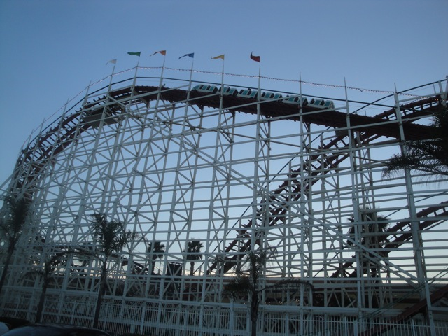

| |
Giant Dipper Review

We're here at Belmont Park, where we'll be reviewing Giant Dipper. The park's star attraction. You get in the Morgan trains, pull down the lap bar, and we're off. You roll down a turn and into the tunnel. This gives the ride quite a classic feel to it. The tunnel is pretty eerie as you roll right on through it. After a few curves and some straight track, you see the light at the end of the tunnel. Then you begin to climb. Up the lift hill you go. Then once you reach the top, you see it. The twisted 1st drop. While the drop is fun and gives us some speed, its not quite as crazy as it looks. Again, you do get a couple good laterals and some speed. Then you rise up into the second hill. It takes away a good portion of your speed. Then you go down into a double down. You gain some speed going down the first drop, then there's a slight turn, which isn't that great before going down the second drop. I'll say this right now. Don't expect very much airtime. Then you twist up into a turnaround before twisting down and turning slightly into a bunny hop. The good news is that there is some airtime right here and the drop that follows it gives us some pretty good speed. Then you go through a bunny hop with some airtime, but due to the wierd curves in the ride, the ride gives you some nice laterals, which on most coasters are fine, but if the coaster has Morgan Trains, laterals aren't so good due to the fact that Morgan Trains have hard plastic seat dividers. Not to mention Morgan Trains automatically staple you in as the ride goes on. But oh well. I'd rather have Giant Dipper with Morgan Trains than Giant Dipper as Firewood. Then you go through a turn around, which gives us some fun laterals. After a little straight track, you go through two bunny hops, one with a tint of laterals. Then after rising up, you go through one long curve, which leads into the brake run, which is also curved. While the ride itself is nothing special, it is a fun woodie, and one of the better ones in California (but that's not really saying much). And just be damn grateful that it still exists. So yeah. I'd totally recommend you ride Giant Dipper if you're ever at Belmont Park (The whole park is based around this coaster after all). =)
6/10
Location: Belmont Park
Opened: 1925
Built by: Fredrick Church
Last Ridden: October 2, 2021
Giant Dipper Photos







|